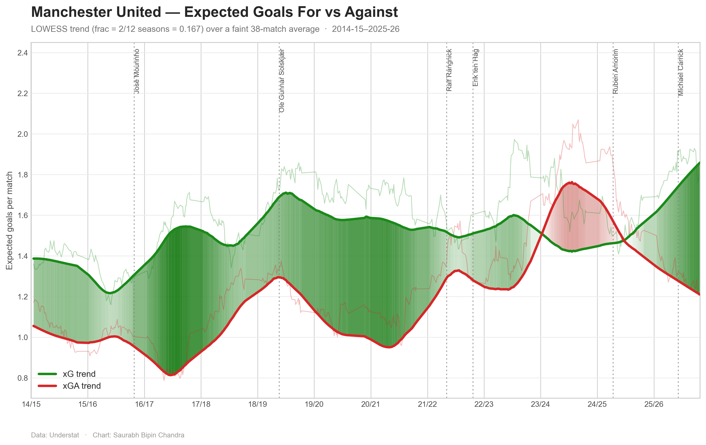

Manchester United — Expected Goals For vs Against
Expected goals (xG) estimates the quality of chances a team creates; xGA does the same for chances they allow. Plotting both over time — smoothed into a trend — shows United's underlying performance with the match-to-match noise stripped out. The shaded band is the gap between them: deeper green where United create far more than they concede, deeper red where it flips.
Hover for values; drag to zoom; double-click to reset. Best viewed on a wider screen.
How it's built
The trend lines are a LOWESS smoother (each local fit spans roughly two seasons), drawn over a faint 38-match moving average for texture. Dotted lines mark manager changes; sub-month caretaker spells are omitted. Match data is from Understat (2014/15 onward, when xG coverage begins). Built in Python with pandas, statsmodels, and Plotly.
Static version
For sharing or print:

Data: Understat · Chart: Saurabh Bipin Chandra